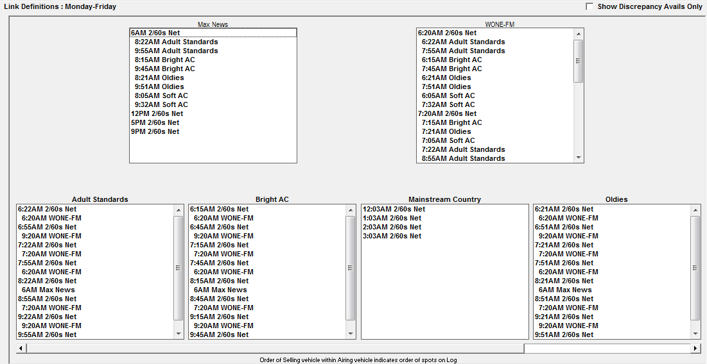

Selling to Airing Links
Selling to Airing Vehicle Links are used to create an association between the avails of a selling vehicle (what is sold) and an airing vehicle(s) (where the spots actually air).
Selling to Airing Vehicle Definitions
Selling Vehicle – This is a vehicle that is used to define inventory, proposal and order entry, to schedule spots, and enter copy. The Selling vehicle is shown on the orders and the invoices. It is used for revenue reporting. There is no limit to the number of airing vehicles that can be associated with a selling vehicle.
Airing Vehicle - This is a vehicle that produces logs, is used to define affiliate pledges, affiliates post against the airing affidavit, and can be posted in Live Log. Spots in the airing vehicle are linked from the selling vehicle. An airing vehicle can receive its avails from multiple selling vehicles.
Common Selling to Airing Scenarios
There are many scenarios that require selling to airing links. Here are some common uses:
- Repeated, multiple air plays, or re-fed spots
- One network avail can be sold, but it airs several times throughout the day
- A Network in which one avail is sold on one ‘program’ or ‘network’ vehicle, but airs across several different programs
- This is used frequently with new networks or lower rated programming
- The need to produce different logs for different departments
- All elements of a program may need to appear on one log, while only network spots need to appear on a second, and only local need to appear on a third
Defining Sell to Air Links
- Enter the selling to Airing Vehicles
- Check “Using Selling Vehicles” in Lists -> Site Options -> General tab
- Enter the new Selling Vehicle and airing Vehicles in List -> Vehicles
- Define the Selling/Airing Group Number in Lists -> Vehicles -> Options -> General
- The group number is how the system groups selling and airing vehicles together
- Define the programming library for the selling and airing vehicles
- Each selling and airing vehicle must have inventory defined
- Drag the libraries onto the schedule display/calendar
- Schedule the programming
- You will receive a message that warns you that links have not been defined. “Changes to Vehicle Events Without Link Changes, Schedule Anyway”. Click OK
Linking Selling to Airing Vehicles
- Select the Links button at the top of the Programming screen
- Select whether the links to be defined are Monday-Friday (M-F), Saturday (Sa), or Sunday (Su)
- Select the Selling to Airing radio button.
- Enter the Start Dates for these links to take affect
- Select the group of vehicles you wish to link
- Click Done.
The Selling Vehicles will be displayed across the top, and airing vehicles below. You may need to use the arrows along the bottom of the screen to see additional vehicles.

Click on the avail and hold the mouse until you see the word “Drag”. Drag the avail from the selling vehicle to the corresponding airing vehicle avail until you see the word “Link” and release. You can also click the first avail and click the avail to which is should be linked to create the links.
As you link avails, the linked times will appear indented
When finished, click “Show Discrepancy Avails Only” to see if there are any unlinked avails. Only unlinked or discrepant avails will display.
Once all links are complete, click Save and Done to be returned to the main Programming screen.
Scheduling Links
Selling to Airing Links will not take effect until they are scheduled. Click the Schedule button to see all vehicle names displayed in the schedule box. Select the vehicle group, or “ All vehicles” and press Schedule.
How to handle differing Monday through Friday inventory
If an airing vehicle has different inventory on different weekdays, this can be handled by setting up unique program libraries for each day with a different break structure, where the avails that are not carried on a specific day have zero units and a zero second length. (This feature is available on Version 7.0 and above.)
Steps for creating unique airing vehicle program libraries and links
- In Vehicle Options on the Log tab for the Airing Vehicle, place a checkmark in the “For Airing Vehicles, Honor Zero Units” checkbox. When this option is checked on, any airing vehicle break with either zero units or zero seconds (or both) will be bypassed on the Traffic log, when using Auto-Fill to create the pledges on the Agreement screen, and when generating the following exports: Automation, Dallas Feed, Phoenix Log, Clearance and Compensation, and Engineering Feed.
- Set up the selling vehicle inventory following the normal procedure.
- Determine every possible airing avail for each Monday through Friday day of the week. Each library that is created will contain all of these avails, although for the days of the week that do not carry specific avails, those breaks will be set to zero units and zero seconds.
- Determine how many unique libraries need to be created. For example, Monday through Thursday might have the same avail structure, and Friday might have a different avail structure. In this example, you would need to create two libraries: one for Monday through Thursday and one for Friday.
- Create each unique library that needs to be created on the Programming screen for the airing vehicle. For any avail that does not air on a specific day, set the number of units to zero and the break length to zero for that library. For example, if Monday through Thursday have a two minute break at 1:30 and 1:45, and Friday only has a single break at 1:30 and does not air the 1:45 break, create a Monday through Thursday library with two minute breaks at 1:30 and 1:45, and create a Friday library with a two minute break at 1:30, and a zero unit/zero second break at 1:45. In this way each day of the week (Monday through Friday) has the same break structure, but because Friday does not air the 1:45 break, it has zero units and a zero second length.
- Drag the newly created libraries to the correct days of the week on the Programming screen. In this example, the Monday through Thursday library would dragged to Monday and checked on for Monday through Thursday (starting from the start date of the new programming), and the Friday library would dragged to Friday and checked on for Friday only (starting from Friday of the start week of the new programming).
- Schedule the programming using the Schedule button.
- Go to the Selling to Airing Links screen and link the selling avails to the airing avails.
- Schedule the link changes using the Schedule button.
- Set up the Agreements on the Affiliate system using Auto-fill to create the avails. Confirm that the avail structure matches the library structure that was entered by reviewing the fed days that are shown.
- The airing vehicle has now been set up for use. Repeat these steps for any other airing vehicles that need to be configured with different Monday through Friday avail structures.
Modifying Selling To Airing Links
If there are any changes to the inventory library for a selling or airing vehicle, you must adjust the links as well. Drag and schedule the new library to the calendar. You will receive a message, “Changes to Vehicle Events Without Link Changes, Schedule Anyway?” Click Yes. After scheduling is complete, modify the links using the steps outlined above and schedule. Update the agreements if needed.
Verifying Links
Selling to Airing Links Report
The Selling to Airing Links report is a generic report that shows selling vehicles along with the airing vehicles that are included in the selling/airing group. For each airing vehicle, the days and effective dates are shown. This report example uses an effective date of 6/30/14.
To run the report, go to Traffic Lists -> Generic and type in “SellToAir” (without quotes) and then press Generate Report.
Selling to Airing Report
The Selling to Airing Vehicles report lists all current and pending avail links as of a given date.
There is an option to Include Selling Avail Lengths, if selected, the report header will read "Selling to Airing Compensation Linkages.” Avail lengths will be in fractions of a second, with 60 seconds equal to 1.0, 30 seconds equal to .5, and 15 seconds equal to .25, and so on, and Avail Names will be displayed.
Airing to Selling Report
The Airing to Selling Vehicles report lists all current and pending avail links as of a given date.
The Airing to Selling report has an option to ‘Include Selling Avail Lengths, if selected, the report header will read "Airing to Selling Compensation Linkages.”
Avail lengths will be in fractions of a second, with 60 seconds equal to 1.0, 30 seconds equal to .5, and 15 seconds equal to .25, and so on, and Avail Names will be displayed.